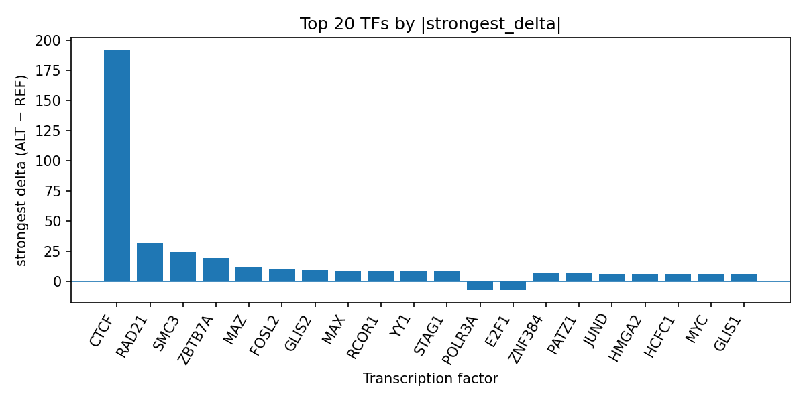

Author: snv-tf-researcher
Nodular sclerosis classical Hodgkin lymphoma is a subtype of classical Hodgkin lymphoma with substantial clinical and biological heterogeneity [1-4]. Here, we summarize computational AlphaGenome transcription factor ChIP-seq predictions for the GWAS variant rs9268528 (A>G), a non-coding association signal selected by effect size for nodular sclerosis classical Hodgkin lymphoma. AlphaGenome outputs are computational predictions rather than experimental measurements, and experimental validation is required. The strongest predicted effects prioritized CTCF, RAD21, SMC3, ZBTB7A, and MAZ among transcription factors with available ChIP-seq tracks. Overall, the predicted profile suggests altered binding of multiple chromatin and transcriptional regulators at this locus, consistent with the broader contribution of non-coding regulatory variation to classical Hodgkin lymphoma susceptibility [5-7].
Classical Hodgkin lymphoma is an integrated clinicopathologic entity whose subtypes are defined by morphology, immunophenotype, molecular features, and clinical presentation [2]. Nodular sclerosis is the most common histologic subtype in several clinical series and is frequently represented in studies of classical Hodgkin lymphoma [1,3,4]. Genetic susceptibility contributes to disease risk, and prior GWAS have identified loci for nodular sclerosis classical Hodgkin lymphoma, including the HLA region and other genomic regions enriched for transcription factor binding and active chromatin [5-7]. These observations suggest that non-coding variation may influence transcriptional regulation relevant to disease susceptibility [5,6].
In this manuscript, we interpret AlphaGenome predictions for rs9268528 in the context of nodular sclerosis classical Hodgkin lymphoma. The variant lies in a non-coding context with intron_variant, non_coding_transcript_variant, and downstream_gene_variant annotations. Because the variant was selected by effect size, it may be in linkage disequilibrium with the true causal variant rather than representing the causal allele itself. Computational TF binding predictions can prioritize regulatory hypotheses, but they do not substitute for experimental validation.
We analyzed rs9268528 (chromosome 6:32415331, A>G; risk allele rs9268528-A) for nodular sclerosis classical Hodgkin lymphoma. The variant was selected by effect size (abs_log_or = 0.9162907318741551; p = 8e-18). Variant consequence annotations were recorded as intron_variant, non_coding_transcript_variant, and downstream_gene_variant.
AlphaGenome was used to generate computational predictions of transcription factor ChIP-seq effects for the reference-to-alternate substitution. These outputs are predicted track-level binding changes, not experimental ChIP-seq measurements. We summarized predicted effects across TF ChIP-seq tracks by transcription factor, including the number of tracks, strongest signed delta, mean delta, median delta, and counts of promoted and inhibited tracks. The workflow from disease/association retrieval through prediction, summarization, PubMed literature search, and manuscript synthesis is shown in Figure 1 (Figure 1).
Figure 1. Workflow overview for the snv-tf-researcher pipeline. The pipeline links disease and GWAS association inputs to variant filtering, consequence annotation, AlphaGenome TF ChIP-seq prediction, TF-level summarization, literature retrieval, and manuscript generation.
The TF summary for rs9268528 prioritized several transcriptional and chromatin-associated factors, with CTCF showing the largest number of affected tracks (153) and the strongest absolute predicted delta (192.0). Most CTCF tracks were promoted (66 promoted, 2 inhibited), and the strongest effect occurred in a fibroblast of villous mesenchyme track. Additional highly ranked factors included RAD21, SMC3, ZBTB7A, MAZ, FOSL2, GLIS2, MAX, RCOR1, YY1, and STAG1, all with positive strongest deltas. Among the inhibitory effects, POLR3A showed the strongest negative delta (-7.5), followed by E2F1 (-7.5) and MCM5 (-5.5).
The top predicted TF effects are summarized in the run-folder table top_tf_effects.tsv, and the top-ranked effects are visualized in Figure 2 (Figure 2). The plot shows that the strongest signed predicted deltas are dominated by positive changes for CTCF and cohesin-related factors, with a smaller number of inhibitory predictions.

Figure 2. Top transcription factors at rs9268528 ranked by absolute predicted ALT-vs-REF binding delta from AlphaGenome TF ChIP-seq tracks. Bars represent the strongest signed delta per TF; positive values indicate predicted promotion and negative values indicate predicted inhibition.
The predicted enrichment of CTCF, RAD21, SMC3, and STAG1 is notable because these factors are associated with chromatin organization and genome architecture, while factors such as MYC, YY1, and EP300 may indicate broader transcriptional regulatory effects. The predominance of positive deltas across the top-ranked factors suggests that the alternate allele may preferentially promote binding across multiple TF ChIP-seq contexts, although the specific biological consequence cannot be inferred from prediction alone.
Prior GWAS have shown that nodular sclerosis classical Hodgkin lymphoma is genetically associated with multiple loci, including variants in or near regulatory regions and the HLA locus [5-7]. In one study, nodular sclerosis cHL associations were reported at 3q28, 6q23.3, 10p14, 13q34, 16p13.13, and in the HLA region, and the authors noted over-representation of transcription factor binding at associated loci [6]. Another GWAS showed that the rs6903608 association with EBV-negative cHL was confined to the nodular sclerosis subtype [7]. In this context, the rs9268528 prediction profile is consistent with a regulatory mechanism involving altered TF occupancy at a non-coding locus [5-7].
The strongest predicted effects for CTCF and cohesin-related factors, including RAD21, SMC3, and STAG1, suggest possible involvement of chromatin structure and higher-order regulatory organization. Additional predicted effects for MAX, MYC, YY1, EP300, and SP1 may indicate coordinated changes in transcriptional control. However, these are computational predictions from AlphaGenome, not direct measurements of TF binding or expression, and experimental validation is required. This is particularly important because the tested variant was selected by effect size and may be linked to the true causal variant rather than being causal itself.
Clinical literature also supports the prominence of nodular sclerosis classical Hodgkin lymphoma as a distinct subtype within classical Hodgkin lymphoma [1-4]. Recent reports continue to describe nodular sclerosis cases across diverse clinical settings and emphasize the need for improved diagnostic and biological characterization [1-4]. The present computational prioritization of rs9268528 may therefore help generate testable hypotheses about regulatory variation in this subtype, but it should be interpreted conservatively.
This analysis has several limitations. First, AlphaGenome predictions are computational and do not establish actual TF binding, chromatin state, or downstream functional effects. Second, the variant was selected by effect size and may be in linkage disequilibrium with the true causal variant. Third, no experimental validation was performed, so the predicted TF effects remain hypothesis-generating only. Fourth, the available literature list is limited, and no additional external studies were used beyond the provided records. Finally, the biological relevance of the strongest predicted signals may vary across cell types and assay contexts represented in the ChIP-seq tracks.
Yamada K, Kijiya M, Koshida T, Gohda T, Suzuki Y. Minimal Change Nephrotic Syndrome Complicated by Classical Hodgkin Lymphoma During Prolonged Rituximab Maintenance Therapy: A Case Report. Nephrology (Carlton, Vic.). 2026;31(4):e70205. PMID: 41987000. doi:10.1111/nep.70205
Carbone A, Alibrahim MN. Hodgkin Lymphoma Classification-From Historical Concepts to Current Refinements. Cancers (Basel). 2025;17(17):2929. PMID: 40941026. doi:10.3390/cancers17172929
Worku DT, Hordofa DF, Molla YM, Keneni NT, Abriham ZY, Yimer MA. Clinicopathologic patterns and treatment outcomes of pediatric classic hodgkin lymphoma in Ethiopian newly opened cancer treatment centers. BMC Pediatr. 2026;26(1):. PMID: 41877072. doi:10.1186/s12887-026-06743-4
Abuhalima D, Malhis D, Qadi Z, Taha AA, Mosleh S, Zyoud SH. Clinical characteristics and short-term outcomes of pediatric lymphoma: a retrospective cohort study from a large tertiary hospital in a low- and middle-income country. Sci Rep. 2025;15(1):33057. PMID: 41006355. doi:10.1038/s41598-025-11278-2
Sud A, Thomsen H, Law PJ, Försti A, Filho MIS, Holroyd A, et al. Genome-wide association study of classical Hodgkin lymphoma identifies key regulators of disease susceptibility. Nat Commun. 2017;8(1):1892. PMID: 29196614. doi:10.1038/s41467-017-00320-1
Lawrie A, Han S, Sud A, Hosking F, Cezard T, Turner D, et al. Combined linkage and association analysis of classical Hodgkin lymphoma. Oncotarget. 2018;9(29):20377-20385. PMID: 29755658. doi:10.18632/oncotarget.24872
Urayama KY, Jarrett RF, Hjalgrim H, Diepstra A, Kamatani Y, Chabrier A, et al. Genome-wide association study of classical Hodgkin lymphoma and Epstein-Barr virus status-defined subgroups. J Natl Cancer Inst. 2012;104(3):240-253. PMID: 22286212. doi:10.1093/jnci/djr516